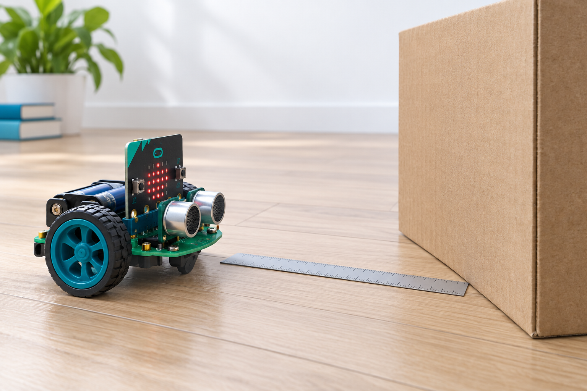

A small robot, honestly evaluated — as preliminary evidence for four much larger goals.
Mini-IPHOREOS is a toy wall-approach robot, simulated end-to-end, built to test — not assume — whether a concept–event–context–policy architecture can learn, adapt, transfer, and stay trustworthy under a fixed interaction budget.

Baseline → Extended → Transfer
Same observable task throughout — approach a wall, verify distance — so every improvement is attributable to the decision architecture, not a changed benchmark.
Scalar Bayesian belief
One state, one rule. 3,600 synthetic trials. Exposes the sensor-bias confound the later systems are built to resolve.
Joint belief + planner
Distance & speed, inferred context, a receding-horizon planner, an explicit bias reference, a frozen held-out evaluation.
Cross-task evidence for O3
Does a library learned on one goal transfer to a different goal, under a persistent, unseen bias? Tested, not assumed.
Preliminary evidence, mapped to four objectives
O1–O4 describe the eventual TRL4 demonstrator — two real task contexts, on hardware. This toy does not claim to be that. Each card pairs the toy-scale evidence with what it does not establish.
Calibrated, held-out‑replicated prediction
A compact, non-discarding hypothesis set
A measured transfer effect, not a claim
Calibrated beliefs, enforced constraints, a full log
Four walkthroughs
Every number on screen traces to a published result — nothing is computed fresh for the camera. Thumbnails below are stand-ins; click through to play the actual video file.
Documentation
Code & reproducibility
$ python -m pytest -q tests 30 passed in 0.3s $ python experiments/run_simulation.py --trials 100 $ python experiments/run_transfer_validation.py